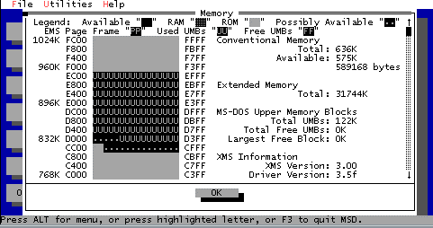
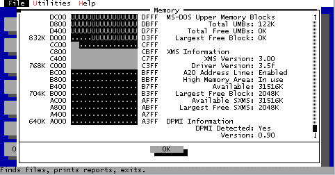

The most common thing I can think of is Memory Management problems
so I am putting forth this information to help those who are less fortunate
than us technoweenies who know this stuff.
One word of warning though, this information goes with this restriction,
USE AT YOUR OWN RISK.
If you feel uncomfortable in modifying your startup files
then DON'T.
 A little tip from the wise Make backup copies of your autoexec.bat
and config.sys before you edit them.
This information below only applies to IBM PC Compatibles
A little tip from the wise Make backup copies of your autoexec.bat
and config.sys before you edit them.
This information below only applies to IBM PC Compatibles
The first thing to know is:
Your working memory is only 1MB.
what this means is, no matter how much memory you buy and stick in your
machine the processor will only access directly the first Megabyte of memory.
Most program will run within the first 640k of memory.
The 384k left was meant for adapter space, meaning adapters like a
network card would take up its ROM/RAM space in that space.
This would allow the processor to read from the RAM space and make
calls to the ROM and get pertenant information for networking operations.
Someone figured out however that, "hey, if the processor can see it there,
then why can't a program run there?" So most of those Terminate and Stay
Ready (TSRs) were being shoved up into that space and leaving the 640k block
for the more important, actual programs. They even gave it a name the Upper
Memory Block (UMB).
The two handy tools of memory adjustment
are Microsoft Diagnotics and the old MEM command from DOS. If you don't
have MSD get it from the Microsoft Site. It came with DOS 5.0 or
Windows 3.1 and higher (I think). However I know that a fresh Windows 95
install doesn't come it.
What does MSD give you? After running
MSD you'll get lots of generic info but what you're after is memory, so
hit M and it will show something like below:


If you'll notice the usual space for upper
memory that is normally available to load stuff into is C000-EFFF.
Usually A000-BFFF is Monochrome and
Text video memory (if you try to use that
space it will likely lock up when tried in use). Monochrome Video
space is sometimes available from B000-B7FF (usually it shows an open space
here (ie. no dots)) As you can see I have some adapters taking
up some space as ROM from C000-CC7E and its all continguous (which is good).
If it is chunked up meaning lots of blank spaces between ROM segments then
it reduces your size of your programs you can load up there. Notice
also, that from CC7F-D13B is dotted (as possibly available) often this
is actually adapter RAM space and shouldn't be used. Since I ran
this under Windows 95 and everything is loaded you can see the U's which
stand for used Upper memory blocks. Normally under DOS and not loading
anything (ie hitting F5 or F8 to not load Config.sys or autoexec.bat) that
area would show up blank.
So what does this mean?
My good area to work with is actually
D000-EFFF because via DOS the little range from D000-D13B which shows up
as dots above are blank.
What do I do about it? In your CONFIG.SYS
you should show this:
Making sure that the paths are correct!
-----------------
DEVICE=C:\WINDOWS\HIMEM.SYS
DEVICE=C:\WINDOWS\EMM386.EXE NOEMS I=D000-EFFF X=A000-CFFF
DOS=HIGH
DOS=UMB
-----------------
This will ensure that you are using all
of your available upper memory block.
When you have to load TSRs you can try
to load them by puting the command LH in front of them.
for example:
MOUSE <before
LH MOUSE <after
In the config.sys drivers can be loaded
in the upper memory area by using the DEVICEHIGH command.
for example:
DEVICE=C:\DOS\ANSI.SYS <before
DEVICEHIGH=C:\DOS\ANSI.SYS <after
If any of this drivel helps e-mail
me and let me know how I
can improve it. Otherwise just
ignore it. =0)